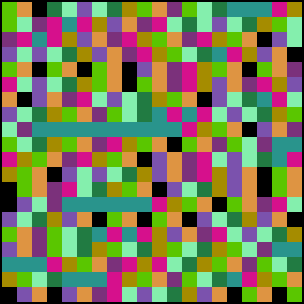

| Tent |
| 1.2, 1.32 |
| 1.4, 1.5 |
| 1.7, 1.8 |
| 1.9, 1.999 |
|  | s = 1.7. More chaos. Note the horizontal blue bands. This signifies that the iterates
have landed near the (unstable) fixed point, but of course eventually wander away from it.
The green-brown-black |
s = 1.8. The chaos is spread over a larger range, but some short-lived cycles still are visible. |